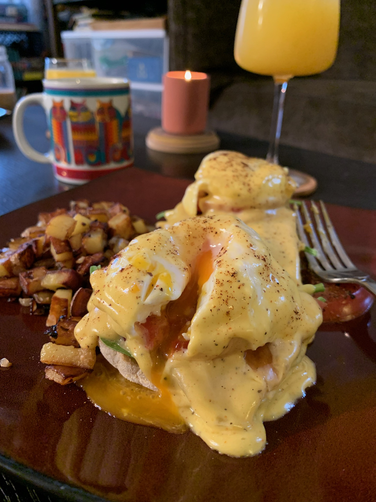

My name is Cain Bailey
I am a software engineer, and hobby enthusiast, living in Eugene, Oregon.
A Brief History And Hopes Moving Forward
I spent the first 12 years of my adult life as a kitchen manager, and cook. My previous career path as a long term chef, created a void in my life of something I crave. Challenge. There were a lot of great times had, many useful and translateable skills, and I met some indescribably amazing people along the way. despite all of the positives, I found myself bored with the monotouny of solving the same problem, day in and day out. I needed to find something new to challenge me and allow me to use my problem solving skills, and stubborn resolve, a more creative way. This led me down a rabbit hole of potential new careers.
During my transitional outreach, I kept seeing bootcamps, and schooling opportunities coming across my desk for coding. I decided to spend a few weeks diving in and seeing if it was something that interested me. I immediately fell in love. I always enjoyed learning, but this went beyond that. I thoroughly enjoy solving problems, working with other people, and I find I am able to put my best work out under pressure (whether that be time, or personal). I decided at the end of August 2023, that needed to be the last summer I put myself through the grueling 100+ degree kitchen environment, and get to doing something I could be proud of, and enjoy as much as I did cooking, if not more. I did some research and found Thinkful. I chose it, because I am adept at self learning, pacing, and motivation. They gave me that opportunity, while providing me a structured enviornment, and practice, to hone all these new skills.
I'm always looking to improve in every aspect of things I can do. When I trained new people in the kitchen, I always told them "the day you come to work thinking you already know everything, is the day you fail. There's always something you can do better than yesterday." It feels a little cheesy, but I do firmly believe that, and that mindset pushed me further every day.
I have quite a few hobbies outside of work life:
- Landscaping
- Furniture Building
- Skateboarding
- Juggling
- Fire Spinning
- Gymnastics
- Coffee
- Cooking
- And A Love of Games(board, video, puzzles, etc.)


My ecclectic array of interests has always been a great motivator for me. The more things I try, the more passion I find. One of my favorite things to do is find someone who is great at something, and learn everything I can from them. Likewise, when I have a skill that someone else wants to learn, I always enjoy getting to teach them what I know! Sparking joy, and passion in others is in a lot of ways, even more rewarding than doing it yourself.